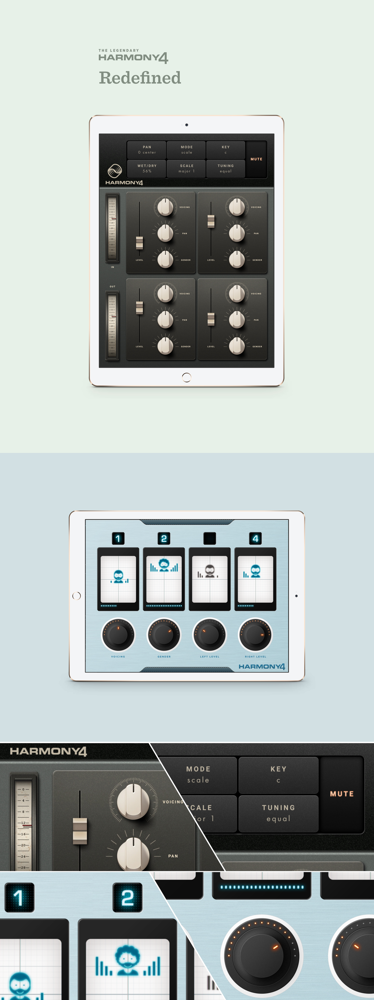

-
Harmony4 iPad app
-
Description
Harmony4 is once a legendary vocal harmony hardware used by many famous artists. As the hardware product phased out, it became clear that there's a need to bring this great product back as a mobile app just like many similar products in the music industry. My two interpretations of the mobile adaptation feature an analog and digital feel.
There is a skeuomorphism trend in the audio fx plugin industry. The rationale behind it is to incorporate photorealistic rendering of the widget and appeal to the users.
-
Time period
2018
-
Credit
All components were created from scratch in photoshop.
-
Keywords
iOS app Audio FX Skeuomorphism Mockup Photoshop
